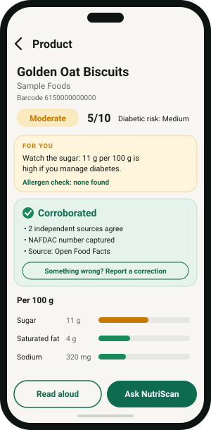
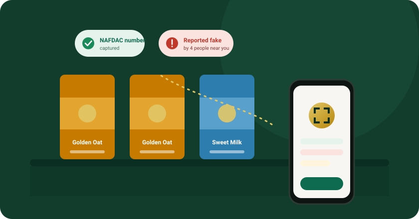
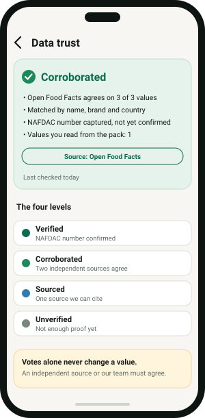

Know what is in it. Know if it can be trusted.
Scan the barcode on a packaged food or medicine. NutriScan gives you a clear health score, what it means for you and your health, and an honest check on whether the product looks genuine.
Free to start · Android 8.0 or newer · Beta build

Labels are hard to read. Fakes are hard to spot.
Most of us decide what to buy in a few seconds, in a market or a shop. Nutrition tables are small and full of numbers. And a look-alike pack can sit on the same shelf as the real one.
The World Health Organization estimates that about 1 in 10 medical products in low- and middle-income countries is substandard or falsified (WHO, 2017). Packaged food faces the same copycat problem.
NutriScan puts the information in your hand at the shelf: what is in it, whether it suits you, and what other people and independent sources say about it.

From shelf to decision in four steps
No account needed to understand the idea. Here is what happens when you scan.
Scan
Point your camera at the barcode. Or type it in. If the pack is new to us, take two photos and we add it.
Understand
A score from 1 to 10 and a plain label: Good, Moderate or Avoid, with the reasons spelled out.
Check trust
See how far the data can be trusted, whether a NAFDAC number was captured, and what people have reported.
Ask or report
Ask NutriScan a question about food or medicine, have it read aloud, or report a pack that looks wrong.
Everything in one calm place
Instant health score
Sugar, salt, saturated fat and fibre, measured against WHO limits, with a diabetic risk read.
Made personal
Tell us about diabetes, blood pressure, weight goals or allergies, and the verdict changes to fit you.
Counterfeit awareness
NAFDAC numbers, community reports with photos, and clear alerts for products reported as fake.
Ask NutriScan
A chat that knows nutrition and medicines. Add photos, get answers in plain language, hear them read aloud.
Teach it new products
Photograph a pack we have not seen. It is read, saved, and every later scan is instant for everyone.
Honest about gaps
If key data is missing we say so and ask for it. We never invent a score for a product we cannot judge.
We would rather say “not sure” than be wrong.
Health information is only useful if it is true. So NutriScan is built around a few rules that we do not bend.
- Rules set the score. AI helps read labels and explain results. It never decides the score.
- Votes are not proof. A correction changes our data only when an independent source or our team backs it.
- Unknown stays unknown. No data means no score, and a clear way to add it.

Before you download
Is NutriScan free?
Yes. Scanning, health scores and diabetic risk are free. A Pro plan adds a personalised avoid-list and scan-pattern tracking, paid through Google Play.
Is this medical advice?
No. NutriScan gives educational information based on public WHO guidance. It does not diagnose or treat anything. For medicines, doses, allergies or a diagnosed condition, ask a doctor or pharmacist. Read more.
Can it tell me for certain that a product is fake?
No, and no app honestly can. Counterfeiters copy real barcodes and even real NAFDAC numbers. NutriScan shows you the evidence: whether a NAFDAC number was captured and confirmed, and what other people reported. You decide.
What happens to my photos and data?
Photos you take to identify a product are read and not kept. Your health details are optional. We do not sell your data. You can delete your scan history and chats in the app. Read the Privacy Policy.
Why does my phone warn me when I install?
The beta is shared as a direct download, not through the Play Store, so Android asks you to allow it. The download page walks you through it and shows how to check the file is genuine.
Check your next pack in seconds
Download the beta, scan something from your kitchen, and see what NutriScan says.
Download for Android